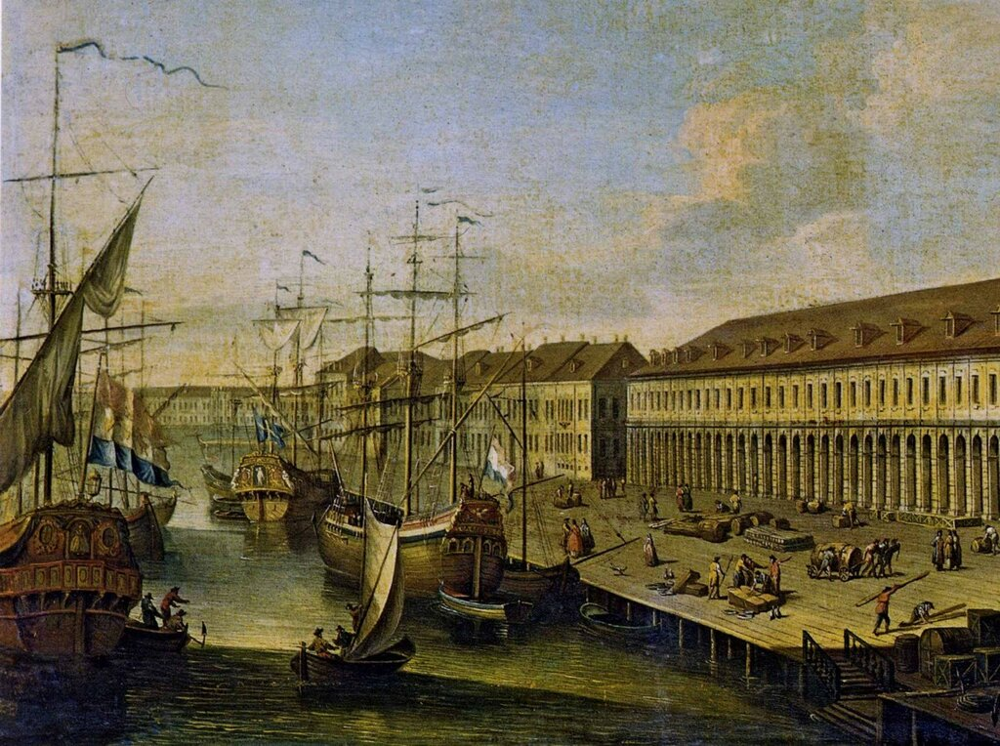

1 вопрос
В каком возрасте Петр вступил на русский престол?
2 вопрос
Он был последним русским царем, но первым:
3 вопрос
Основателем какого города стал Петр Первый?
4 вопрос
За что Петр получил титул Великий?
5 вопрос
Куда выводит «окно», прорубленное Петром?
6 вопрос
Петр Первый, вернувшись из заграницы организовал музей редкостей, получивший название:
7 вопрос
Какой псевдоним взял государь для путешествия заграницей?
8 вопрос
Сколькими ремеслами овладел Петр Алексеевич?
9 вопрос
Как Петр называл Санкт–Петербург?
10 вопрос
Под каким именем Петр I отправился с Великим посольством за границу?
11 вопрос
Чьим именем Петр I назвал Санкт–Петербург?
12 вопрос
Какое изобретение при Иване III использовали как орудие устрашения, а при Петре I для украшения и развлечения?
13 вопрос
Чем раньше занимался Александр Меншиков?
14 вопрос

О ком сказал А. С. Пушкин:«То академик, то герой,То мореплаватель, то плотник»?
15 вопрос
Петр Первый хорошо знал адицию, субстракцию, мультипликацию и дивизию. В его времена эти действия знали далеко не все, и Петр настойчиво заставлял изучать это своих сподвижников. Сейчас это знает каждый школьник. Что это?
16 вопрос
Пётр 1 начал свои преобразования в России, потому что:
17 вопрос
Петр Первый издал указ: " Учить всех дворянских детей "цифири и геометрии", а тем, кто не усваивал этих премудростей он запрещал …
18 вопрос
Почему для России важно было создать флот?
19 вопрос
Какие растения привез в Россию Петр I?
20 вопрос
В какой стране Пётр 1 учился морскому и корабельному делу?